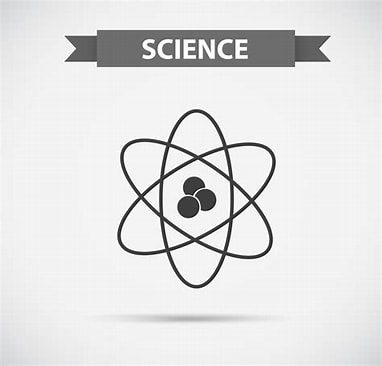

My name is Eve Alice Ryan.
About me
I am 13 years old as of 2023 (My birthday is March 12th. I was born in 2010). I like playing games, Watching YouTube,listening to music on YouTube, drawing and learning.I have a younger sister who
is 11 years old. I am pescetarian. I like cats because they are cute but that's the only reason why I like them. I am questioning my sexual and romantic orientations but I think my orientation is aroace.
I am passionate about Languages, Science, Art, Activism and making The Media a better place. I am passionate about Languages, Science, Art,Activism and making The Media a better place.I strongly support
Pride and LGBTQIA+ people to the point where I create Pride stuff, even outside of June. I believe inclusivity is very important and that people who are racist, homophobic, sexist, able-ist, ageist, are
discriminatory in any other way or support any form of negative discrimination are foolish.
Pride Terms
Acronym Definitions of LGBTQIA+:
L Lesbian. A non-man attracted to other non-men.
G Gay. A reclaimed slur but can still be offensive. A non-woman attracted to other non-women.
B Bisexual. One sexually attracted to at least two genders. Not to be confused with Polysexual.
T Transgender. Someone whose gender identity is different to the sex they were assigned at birth.
Q Queer. A reclaimed slur but can still be offensive. An umbrella term for LGBTQIA+ both Queer and Questioning can be the Q in LGBTQIA+.
Q Questioning. One who is questioning at least one of their following:sexual orientation, romantic orientation, gender identity.
I Intersex. A person who does not fit into “male” or “female” genetalia or into bodily norms.
A Asexual. Someone who experiences little to no sexual attraction. Not to be confused with Aromantic.
+.Any sexual, orientations,romantic orientation or gender identity outside of these terms. e.g Non-Binary,Pansexual,romantic orientations,Genderfluid.
Other Pride Definitions (A few definitions in the "+" category)
Non-binary. One whose gender identity is in between or beyond the gender binary. Their pronouns are usually they/them.
Pansexual. Someone who is sexually attracted to all gender identities. They can be percieved as "Genderblind".
Polysexual. Someone who is sexually attracted to multiple genders. Not to be confused with Bisexual.
Aromantic. Someone who experiences little to no romantic attraction. Not to be confused with Asexual.
Genderfluid. Someone whose gender identity changes between at least two of the following: Masculine, Feminine, Neutral.
Ask their pronouns often. Some of them have changing pronouns while others keep the same pronouns regardless of what they identify as.
Coming Out: One revealing that they are LGBTQIA+
My interests in detail
I love languages and learning new languages because they are useful for travelling, exploring other cultures and communicating with speakers of that language.
No language is useless! I love Science because it tells how everything in the world works e.g Our bodies, The Periodic Table, Gravity and everything outside of
the world e.g The Solar System. I love art because you are free to do and create anything you want. I love Activism, especially for human rights because everyone
deserves equal rights and i also like activism to save the environment because the environment is important. I love making the Media a better place because The
Media needs a little cleaning, by a little, I mean a lot. I like making the media more inclusive by creating concepts for animations that will be public and
finished when I am older.

My hobbies in detail
I like playing games that are not too violent or inappropriate in any way. My favourite game is Roblox. In Roblox, I like Tycoons,Obbies, Bloxburg and RPGs (role
playing games). I like watching YouTube because there is lots of content available. I like listening to pop and electronic music on YouTube. I like drawing because
your imagination can be expressed, there is variety, what you draw shows creativity and anything can be drawn. I like learning because it is really useful and because
there is a lot to learn.
Terms you probably don't know
Pescetarianism
A diet like vegetarianism (not eating meat, seafood, gelatine or any other product containing dead animals) except seafood is incorporated.
Aroace
A colloquial term meaning Aromantic and Asexual. Someone who experiences little to no sexual or romantic attraction
My favourite foods
My favourite fruit is apples. My favourite vegetables are carrots. My favourite hot meal is noodles.My favourite dessert is ice cream. My favourite
hot meal you can eat with your hands is pizza.